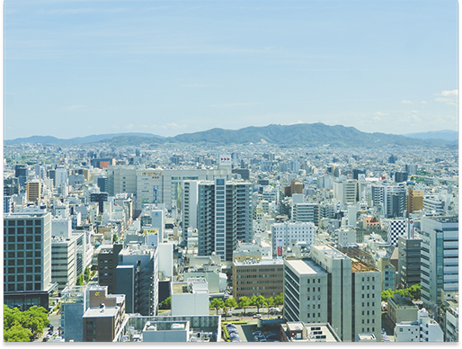

経営者・不動産オーナー必見！
地価高騰時代に考える不動産
「価値最大化」と「売却•承継」戦略
11.25
火
15:00-16:30
ホテルメルパルク広島 5階|椿
セミナーの見どころ
-
01
広島不動産の“今”が一目でわかる
不動産M&地価・賃料の動きが気になっているオーナーの方へ。
専門家が最新データをもとに、広島市中心部から郊外までの市場動向をわかりやすく分析します。「地価はどこまで上がるのか？」「賃料を上げられるタイミングは？」
——今知っておくべき市況のリアルを解説。 -
02
あなたの物件価値、
正しく把握できていますか？土地価格だけでは見えない“収益物件としての本当の価値”を、モデルケースを通じて算出。 土地1億円・収益価値7000万円といった事例をもとに、賃料改定や売却判断の具体的な考え方を紹介します。「保有を続けるか、動かすか」その判断に必要な視点をお伝えします。
-
03
変化する市場に、どう備えるか
地価や金利、需給の変化。
——環境が変わる今こそ、戦略的な資産管理が求められます。第二部では、不動産の組み換えや承継、M&Aを活用した“資産を守るための選択肢”を解説。経営者・オーナーが押さえるべき「次の一手」を、実例を交えてご紹介します。
不動産市況とこれからの資産戦略
広島の不動産市況の現状
-
中心部地価上昇率
約＋3.0％前後
-
郊外エリア
横ばい〜＋1％
-
住宅賃料
間取り/エリアにより増減あり
（平均±2％以内）
広島市中心部は再開発の影響で地価が上昇傾向。住宅地は＋2.4％、商業地は＋4.6％と、エリアによって伸び方に差があります。一方、郊外では横ばい〜小幅上昇で、立地による二極化が進行。賃料はオフィス・住宅ともに安定推移し、人気エリアではわずかに上昇傾向です。
収益物件の価値をデータで再確認
不動産×資産戦略
〜次世代を見据えた選択〜
地価が高止まりする今、所有・売却・再投資・法人化など、動かし方次第で資産価値は変わります。 さらに、不動産M&A（法人譲渡・承継）を活用することで、節税や承継リスクの低減も可能に。 「資産を減らさずに引き継ぐ」ための新しい選択肢が広がっています。
- 動向まとめ
- 不動産法人化で節税・承継対策を実現
- 低収益物件を整理し、好立地物件へ再投資
- 不動産M&A活用による資産承継事例が増加中

登壇者
クレジオ・パートナーズ株式会社
李 志翔宅地建物取引士｜代表取締役
事業承継や相続の現場では、不動産の扱いひとつで、企業の未来が大きく変わることがあります。今回のセミナーでは、長年にわたり上場・非上場オーナー企業のM&A・事業承継を支援してきた経験をもとに、「不動産を経営資源としてどう活かすか」「不動産M&Aをどのように活用すべきか」を、実際の事例とともに分かりやすくお伝えします
クレジオ・パートナーズ株式会社
今井 航太宅建取引士｜コンサルタント
広島の不動産市場は近年、再開発や人口動態の変化に伴い、地価・賃料ともに新たな動きを見せています。本セミナーでは、最新の市場データをもとに、収益不動産の活用ポイントや、安定した運用を実現するための実践的な視点をお伝えいたします。これまで仲介・管理・投資サポートなど幅広く携わってきた経験から、広島エリアならではの不動産活用のヒントを、具体的な事例を交えながら分かりやすくご紹介します。
クレジオ総合鑑定株式会社
仲野 亮太不動産鑑定士｜専務取締役
不動産の価値は、単なる数字や相場では測れません。経営資源として「どう使うか」「どう守るか」を見極めることが重要です。今回のセミナーでは、実際の評価演習を通じて、現場で使える不動産評価の考え方を体感していただきます。また、経営戦略の一部として不動産を最適化するための思考法や、リスクを抑えながら収益性を高める具体的なアプローチについても解説いたします。実務に直結する内容をぜひお持ち帰りください。
セミナーお申し込みフォーム
先着50名様限定
※定員に達し次第、受付を終了いたします。
※同業の不動産鑑定業務に従事されている方のご参加はご遠慮ください。
年は「土地価格＞収益価値」となるケースも増加。 単なる価格ではなく、“収益力”で資産価値を測る時代です。 収益モデルを用いた試算を通じて、「いま保有を続けるべきか」「賃料を見直すべきか」を判断するヒントを提供します。
試算例- 土地評価額：1億円
- 収益価値（賃料ベース）：約7,000万円
賃料改定で価値を引き上げる余地あり。M&Aを支えています。